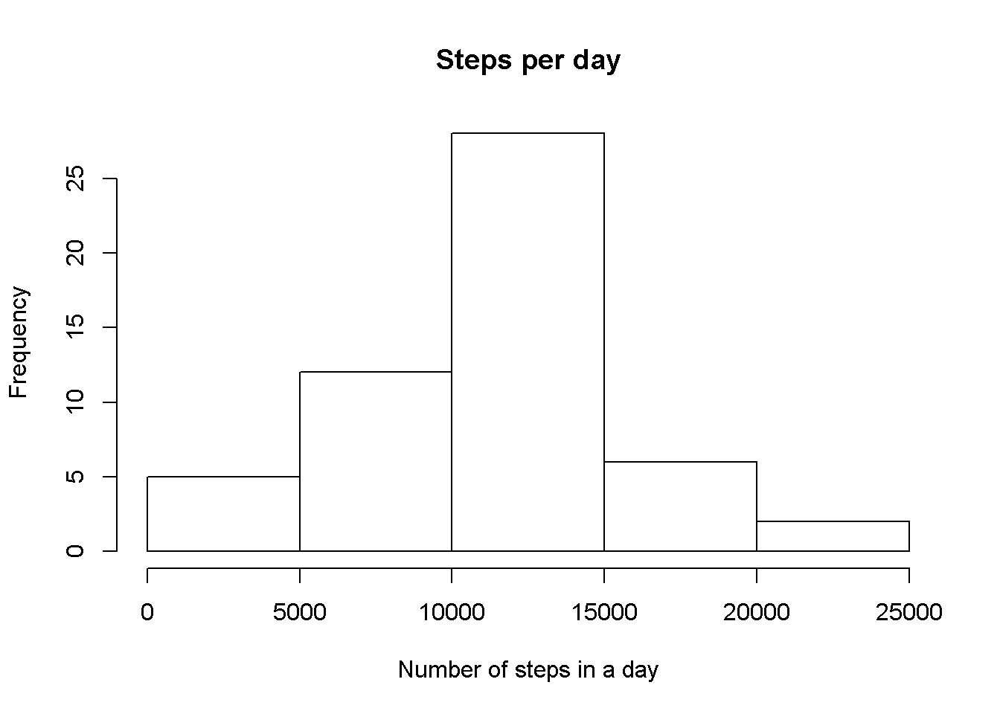
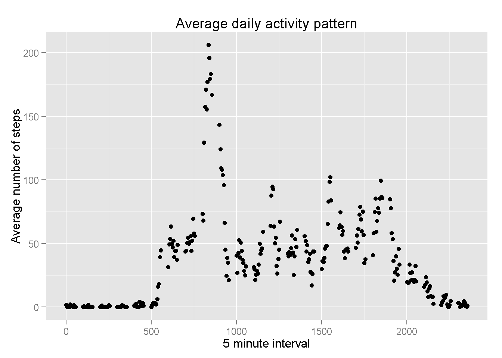
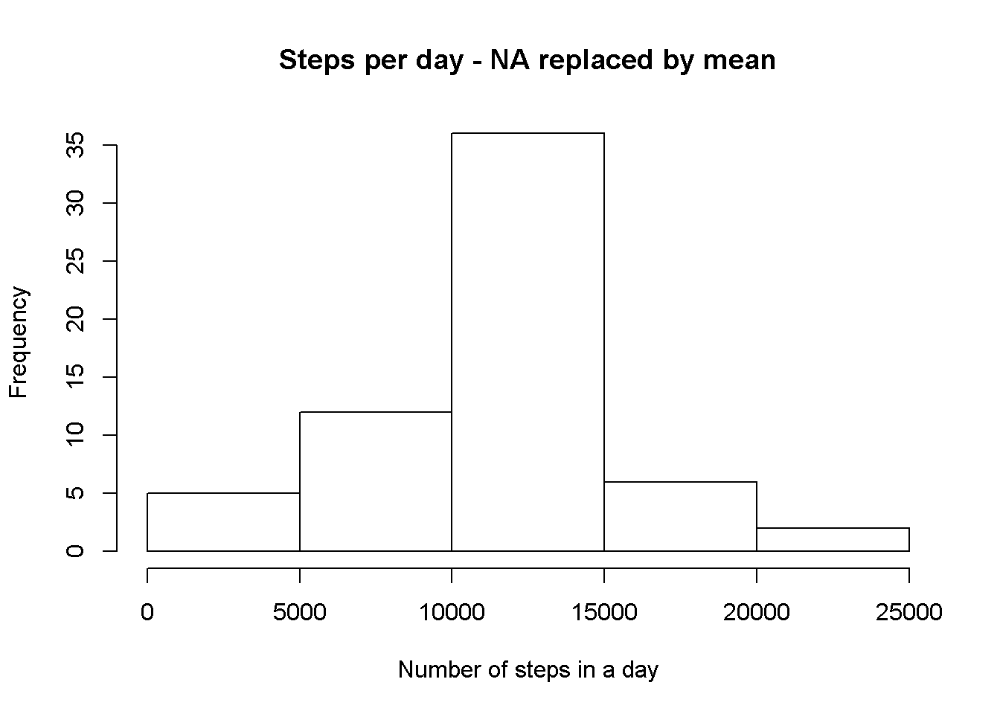

zip_url <- "http://d396qusza40orc.cloudfront.net/repdata%2Fdata%2Factivity.zip"
temp <- tempfile()
download.file(zip_url, temp, mode="wb")
unzip(temp,"activity.csv")
data <- read.table("activity.csv", sep=",", header=TRUE)
unlink(temp)
library(dplyr)##
## Attaching package: 'dplyr'
##
## The following object is masked from 'package:stats':
##
## filter
##
## The following objects are masked from 'package:base':
##
## intersect, setdiff, setequal, uniondata_by_date <- group_by(data, date)steps_by_date <- summarise(data_by_date, steps=sum(steps))
hist(steps_by_date$steps,
main="Steps per day",
xlab="Number of steps in a day")
final_steps_by_date <- summarise(steps_by_date,
avg_steps=mean(steps,na.rm=TRUE),
med_steps=median(steps,na.rm=TRUE))
avgstp <- final_steps_by_date[1,1]
medstp <- final_steps_by_date[1,2]The average number of steps in a day is 1.076618910^{4}
The median number of steps in a day is 10765
data_by_interval <- group_by(data, interval)
steps_by_interval <- summarise(data_by_interval, steps=mean(steps, na.rm=TRUE))
library(ggplot2)
qplot(interval, steps, data=steps_by_interval, type="1",
main="Average daily activity pattern",
xlab="5 minute interval",
ylab="Average number of steps")
max_steps <- max(steps_by_interval$steps)
max_steps_interval <- subset(steps_by_interval, steps==max_steps)
msi <- max_steps_interval[1,1]
mss <- max_steps_interval[1,2]The interval which, on average across all days in the dataset, that contains the maximum number of steps is 835
This interval has 206.1698113 steps on average
num_na <- sum(is.na(data$steps))There are 2304 missing values in the data set
My feeling is that people would be very consistent in their behaviour over a week. That is, they would do the same thing at the same time. For example, leave for work at 7:30am of a weekday, go for a walk/jog at 6am on Mon, Wed, and Fri. Therefore, I would replace missing values with the mean value the 5-minute interval. That is, the number of steps for 8:00am, would be replaced with the mean number of steps for 8:00am across the data set.
all_data <- cbind(data_by_date, steps_by_interval)
colnames(all_data) <- c("steps", "date", "interval", "mean_interval", "mean_steps")
all_data$steps <- replace(all_data$steps, is.na(all_data$steps), all_data$mean_steps)## Warning in replace(all_data$steps, is.na(all_data$steps),
## all_data$mean_steps): number of items to replace is not a multiple of
## replacement lengthsbdnn_by_date <- group_by(all_data, date)
steps_by_date_no_na <- summarise(sbdnn_by_date, steps=sum(steps))
hist(steps_by_date_no_na$steps,
main="Steps per day - NA replaced by mean",
xlab="Number of steps in a day")
final_steps_by_date_no_na <- summarise(steps_by_date_no_na,
avg_steps=mean(steps),
med_steps=median(steps))
avgstp_no_na <- final_steps_by_date_no_na[1,1]
medstp_no_na <- final_steps_by_date_no_na[1,2]The average number of steps in a day is 1.076618910^{4}
The median number of steps in a day is 1.076618910^{4}
Unfortunately, due to personal reasons, I was unable to complete this task